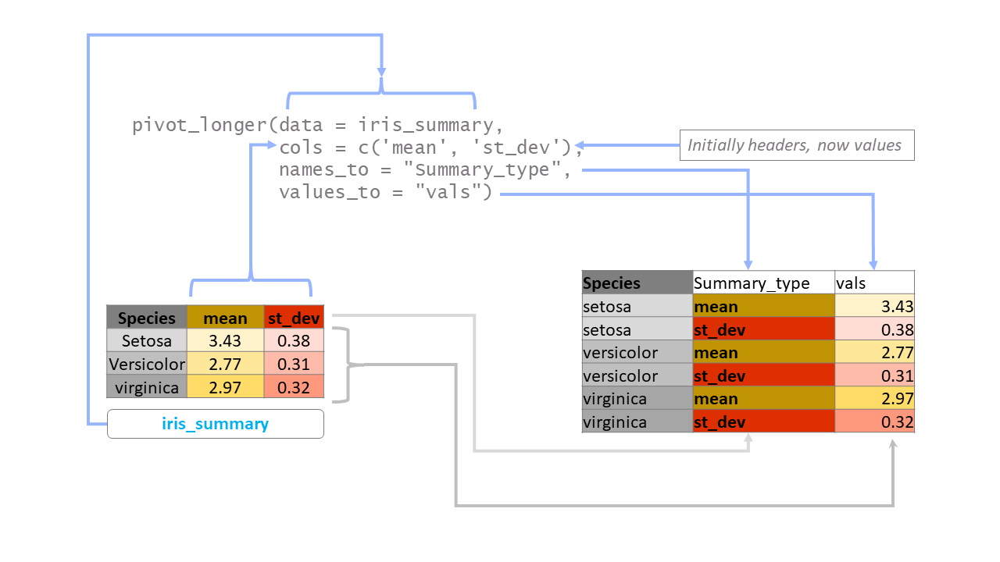
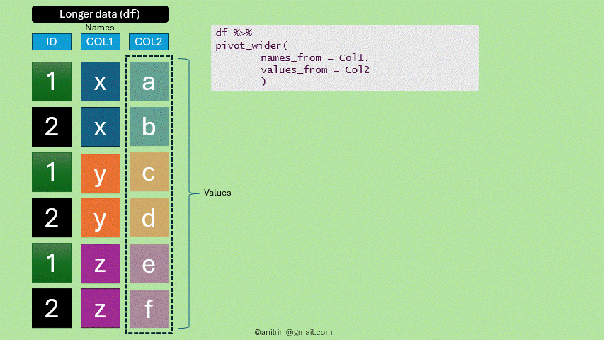
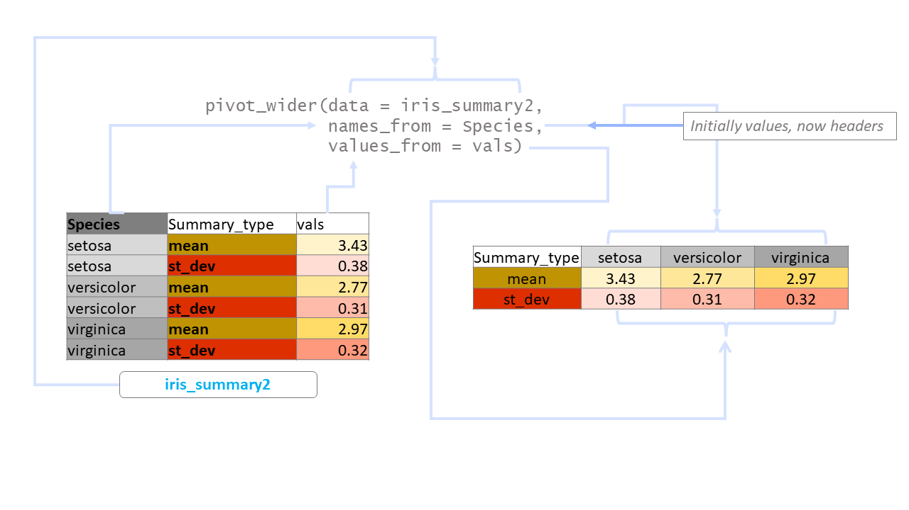

15 Reshaping Data with tidyr
Data received from offices is usually laid out for reading, not for analysis. A State’s Finance Department sends a statement of expenditure with one row for each district and one column for each month. A works register packs the year, office and serial number of a work into one cell, and the amount spent and sanctioned into another. A stores register writes “-do-” instead of repeating the item name. A voucher lists several bill numbers in a single cell. Such layouts are easy on the eye. But they make even simple audit questions hard. Which month had the most expenditure? Which bill was paid twice? Which district did not report at all?
In this chapter we learn to reshape such data into a form that R can analyse easily. We first see what tidy data means. We then learn to turn columns into rows and rows into columns, to split crowded cells, to fill “-do-” entries, and to bring back periods which are silently missing. At the end, we put these tools together on a month-wise statement, and find a rush of expenditure in March and months that were never reported.
We use the package tidyr,1 which is part of the core tidyverse. It can be loaded with library(tidyr) or library(tidyverse).
Prerequisites
15.1 Concepts of tidy data
Hadley Wickham, the author of the tidyverse, introduced the idea of tidy data in a paper2 in the Journal of Statistical Software.3 Tidy data is a way of laying out a data set so that it can be easily analysed and visualised. It is a goal to aim for when cleaning data. Once we understand it, analysis, visualisation and even data collection become much easier.4
A tidy data set has three properties.
- Each variable forms a column.
- Each observation forms a row.
- Each type of observational unit forms a table.
Figure 15.1 shows this as a diagram5.

Once a data set is tidy, it can go straight into the functions that transform, model or visualise data.
The package tidyr comes with five small tables which show the same data in different layouts6. They are a quick way to see the three rules at work.
tidyr::table1# A tibble: 6 × 4
country year cases population
<chr> <dbl> <dbl> <dbl>
1 Afghanistan 1999 745 19987071
2 Afghanistan 2000 2666 20595360
3 Brazil 1999 37737 172006362
4 Brazil 2000 80488 174504898
5 China 1999 212258 1272915272
6 China 2000 213766 1280428583tidyr::table2# A tibble: 12 × 4
country year type count
<chr> <dbl> <chr> <dbl>
1 Afghanistan 1999 cases 745
2 Afghanistan 1999 population 19987071
3 Afghanistan 2000 cases 2666
4 Afghanistan 2000 population 20595360
5 Brazil 1999 cases 37737
6 Brazil 1999 population 172006362
7 Brazil 2000 cases 80488
8 Brazil 2000 population 174504898
9 China 1999 cases 212258
10 China 1999 population 1272915272
11 China 2000 cases 213766
12 China 2000 population 1280428583tidyr::table3# A tibble: 6 × 3
country year rate
<chr> <dbl> <chr>
1 Afghanistan 1999 745/19987071
2 Afghanistan 2000 2666/20595360
3 Brazil 1999 37737/172006362
4 Brazil 2000 80488/174504898
5 China 1999 212258/1272915272
6 China 2000 213766/1280428583# The same data in two tables
tidyr::table4a# A tibble: 3 × 3
country `1999` `2000`
<chr> <dbl> <dbl>
1 Afghanistan 745 2666
2 Brazil 37737 80488
3 China 212258 213766tidyr::table4b# A tibble: 3 × 3
country `1999` `2000`
<chr> <dbl> <dbl>
1 Afghanistan 19987071 20595360
2 Brazil 172006362 174504898
3 China 1272915272 1280428583tidyr::table5# A tibble: 6 × 4
country century year rate
<chr> <chr> <chr> <chr>
1 Afghanistan 19 99 745/19987071
2 Afghanistan 20 00 2666/20595360
3 Brazil 19 99 37737/172006362
4 Brazil 20 00 80488/174504898
5 China 19 99 212258/1272915272
6 China 20 00 213766/1280428583Let us look at them one by one.
-
table1follows all three rules, so it is tidy. Every observation has its own row, and each variable has its own column. -
table2spreads one observation over two rows, one for cases and one for population. The columntypetells which is which. So it breaks rule 2. -
table3stores two variables, cases and population, together in one columnrate. So it breaks rule 1. -
table4aandtable4bkeep one observation in two different tables, breaking rule 3. Both also use values of the year,1999and2000, as column headers. So the variable year is spread over two columns, which breaks rule 1 too. -
table5splits the single variable year into two columns,centuryandyear, breaking rule 1. Liketable3, it also crams cases and population into one column.
Reshaping data
Most data sets we receive in audit are not tidy. To tidy them, we first decide what in the table is a value, what is a variable and what is an observation. We then reshape the data in one of two ways.
- An observation spread over several rows, as in
table2, is brought into one row. - A variable spread over several columns, as in
table4a, is brought into one column.
The two most important functions for this are pivot_longer() and pivot_wider(). Let us learn them.
15.2 Longer format with pivot_longer()
Statements from offices often have values, like years or months, as column headers. To analyse them, we turn these headers into a column of their own. This makes the table longer. We use pivot_longer() for it. The basic syntax is shown below.
pivot_longer(
data,
cols,
names_to = "name",
values_to = "value",
...
)The function has many more arguments, but let us start with these.
-
colsgives the columns to be turned into rows. -
names_togives the name of the new column which will hold the old column headers. -
values_togives the name of the new column which will hold the values of those columns.
The animated Figure 15.2 shows how this works.
Let us take a statement of expenditure, in ₹ crore, of four departments of a State over three financial years. This is how it usually arrives, with one column for each year.
# A tibble: 4 × 4
department `2022-23` `2023-24` `2024-25`
<chr> <dbl> <dbl> <dbl>
1 Health 413. 448. 472.
2 Education 655. 690. 703.
3 Public Works 298. 342. 389.
4 Rural Development 362. 352. 411.The years are values of a variable, the financial year, but here they are column headers. The column names start with a digit and contain a hyphen. So R needs them in backticks, like `2022-23`. With pivot_longer(), we turn the headers into values of a new column year.
dept_exp |>
pivot_longer(cols = c(`2022-23`, `2023-24`, `2024-25`),
names_to = "year",
values_to = "exp_crore")# A tibble: 12 × 3
department year exp_crore
<chr> <chr> <dbl>
1 Health 2022-23 413.
2 Health 2023-24 448.
3 Health 2024-25 472.
4 Education 2022-23 655.
5 Education 2023-24 690.
6 Education 2024-25 703.
7 Public Works 2022-23 298.
8 Public Works 2023-24 342.
9 Public Works 2024-25 389.
10 Rural Development 2022-23 362.
11 Rural Development 2023-24 352.
12 Rural Development 2024-25 411.Each department now has three rows, one for each year. Check the diagram in Figure 15.3.

When values are in column headers
Naming every year column gets tiresome when there are many. With the pipe, we may instead say “all columns except department”.
dept_exp |>
pivot_longer(cols = -department, # all columns except department
names_to = "year",
values_to = "exp_crore")# A tibble: 12 × 3
department year exp_crore
<chr> <chr> <dbl>
1 Health 2022-23 413.
2 Health 2023-24 448.
3 Health 2024-25 472.
4 Education 2022-23 655.
5 Education 2023-24 690.
6 Education 2024-25 703.
7 Public Works 2022-23 298.
8 Public Works 2023-24 342.
9 Public Works 2024-25 389.
10 Rural Development 2022-23 362.
11 Rural Development 2023-24 352.
12 Rural Development 2024-25 411.The helpers of select() work here too. For example, cols = starts_with("20") picks every column whose name begins with “20”.
When the headers combine a variable and a value
Sometimes a column name holds two things together. Budget statements commonly have one column for the budget and one for the expenditure of each year, with names like budget_2023-24 and exp_2023-24. Here is such a statement, in ₹ crore.
budget_exp <- tibble(
department = c("Health", "Education", "Public Works", "Rural Development"),
`budget_2023-24` = c(470.0, 720.0, 350.0, 420.0),
`exp_2023-24` = c(448.2, 690.1, 341.7, 352.5),
`budget_2024-25` = c(495.0, 730.0, 360.0, 445.0),
`exp_2024-25` = c(471.9, 702.8, 389.2, 410.6)
)
budget_exp# A tibble: 4 × 5
department `budget_2023-24` `exp_2023-24` `budget_2024-25` `exp_2024-25`
<chr> <dbl> <dbl> <dbl> <dbl>
1 Health 470 448. 495 472.
2 Education 720 690. 730 703.
3 Public Works 350 342. 360 389.
4 Rural Developme… 420 352. 445 411.The argument names_sep splits each header at a separator. We give two names in names_to, one for each part.
be_long <- budget_exp |>
pivot_longer(cols = !department,
names_sep = "_",
names_to = c("item", "year"),
values_to = "amount")
be_long# A tibble: 16 × 4
department item year amount
<chr> <chr> <chr> <dbl>
1 Health budget 2023-24 470
2 Health exp 2023-24 448.
3 Health budget 2024-25 495
4 Health exp 2024-25 472.
5 Education budget 2023-24 720
6 Education exp 2023-24 690.
7 Education budget 2024-25 730
8 Education exp 2024-25 703.
9 Public Works budget 2023-24 350
10 Public Works exp 2023-24 342.
11 Public Works budget 2024-25 360
12 Public Works exp 2024-25 389.
13 Rural Development budget 2023-24 420
14 Rural Development exp 2023-24 352.
15 Rural Development budget 2024-25 445
16 Rural Development exp 2024-25 411.We gave two column names in the argument names_to, since each header splits into two parts.
This table is long, but still not tidy. The budget and the expenditure of a year are in two different rows. We want budget and exp to stay as columns, and only the year to become a column of values. For this we use the special value ".value" in names_to. It tells pivot_longer() that this part of the header is the name of a value column. The animated Figure 15.4 shows the idea.
be_tidy <- budget_exp |>
pivot_longer(cols = !department,
names_sep = "_",
names_to = c(".value", "year"))
be_tidy# A tibble: 8 × 4
department year budget exp
<chr> <chr> <dbl> <dbl>
1 Health 2023-24 470 448.
2 Health 2024-25 495 472.
3 Education 2023-24 720 690.
4 Education 2024-25 730 703.
5 Public Works 2023-24 350 342.
6 Public Works 2024-25 360 389.
7 Rural Development 2023-24 420 352.
8 Rural Development 2024-25 445 411.With .value, the argument values_to is not needed, since the names of the value columns come from the headers themselves.
Now each row is one department in one year, and the audit question is one line away. Did any department spend more than its budget?
# A tibble: 1 × 5
department year budget exp saving
<chr> <chr> <dbl> <dbl> <dbl>
1 Public Works 2024-25 360 389. -29.2Public Works spent ₹29.2 crore more than its budget in 2024-25. Expenditure in excess of the grant needs regularisation by the legislature, so this is a finding to report.
15.3 Wider format with pivot_wider()
As the name suggests, pivot_wider() does the opposite of pivot_longer(). It turns the values of a column into column headers. With its values_fn argument, it can also summarise, like a pivot table in MS Excel. The basic syntax, with the commonly used arguments, is shown below.
pivot_wider(
data,
id_cols = NULL,
names_from = name,
values_from = value,
values_fill = NULL,
values_fn = NULL,
...
)The arguments are these.
-
id_colsgives the columns which identify each row of the output. -
names_fromgives the column, or columns, whose values become the new column names. -
values_fromgives the column, or columns, whose values fill the cells. -
values_fillgives the value to put where a combination is missing. -
values_fngives a function to summarise the values when a cell would get more than one.
The function has many other arguments, which help with complicated tables.
The animated Figure 15.5 shows the basic idea.

Figure 15.6 shows the mechanics as a diagram.

Let us use the long table be_long we made above. It has one row for each department, item and year.
Items as columns. Taking the column names from item gives the budget and the expenditure side by side. This is the same tidy table we got with .value.
be_long |>
pivot_wider(names_from = item,
values_from = amount)# A tibble: 8 × 4
department year budget exp
<chr> <chr> <dbl> <dbl>
1 Health 2023-24 470 448.
2 Health 2024-25 495 472.
3 Education 2023-24 720 690.
4 Education 2024-25 730 703.
5 Public Works 2023-24 350 342.
6 Public Works 2024-25 360 389.
7 Rural Development 2023-24 420 352.
8 Rural Development 2024-25 445 411.Years as columns. Taking the names from year gives a statement with one column for each year.
be_long |>
pivot_wider(names_from = year,
values_from = amount)# A tibble: 8 × 4
department item `2023-24` `2024-25`
<chr> <chr> <dbl> <dbl>
1 Health budget 470 495
2 Health exp 448. 472.
3 Education budget 720 730
4 Education exp 690. 703.
5 Public Works budget 350 360
6 Public Works exp 342. 389.
7 Rural Development budget 420 445
8 Rural Development exp 352. 411.Summarising. When id_cols leaves out a column, several values fall into the same cell. values_fn says how to combine them. Here we keep only department as the identifier, so the two years are added together.
be_long |>
pivot_wider(id_cols = department,
names_from = item,
values_from = amount,
values_fn = sum)# A tibble: 4 × 3
department budget exp
<chr> <dbl> <dbl>
1 Health 965 920.
2 Education 1450 1393.
3 Public Works 710 731.
4 Rural Development 865 763.Summarising on another identifier. With year as the identifier, we get the State’s total budget and expenditure for each year.
be_long |>
pivot_wider(id_cols = year,
names_from = item,
values_from = amount,
values_fn = sum)# A tibble: 2 × 3
year budget exp
<chr> <dbl> <dbl>
1 2023-24 1960 1832.
2 2024-25 2030 1974.Several columns in names_from. The new column names then combine the values of both, joined by an underscore.
be_long |>
pivot_wider(names_from = c(year, item),
values_from = amount)# A tibble: 4 × 5
department `2023-24_budget` `2023-24_exp` `2024-25_budget` `2024-25_exp`
<chr> <dbl> <dbl> <dbl> <dbl>
1 Health 470 448. 495 472.
2 Education 720 690. 730 703.
3 Public Works 350 342. 360 389.
4 Rural Developme… 420 352. 445 411.The order inside names_from decides the order of the parts in the new names.
be_long |>
pivot_wider(names_from = c(item, year),
values_from = amount)# A tibble: 4 × 5
department `budget_2023-24` `exp_2023-24` `budget_2024-25` `exp_2024-25`
<chr> <dbl> <dbl> <dbl> <dbl>
1 Health 470 448. 495 472.
2 Education 720 690. 730 703.
3 Public Works 350 342. 360 389.
4 Rural Developme… 420 352. 445 411.Several columns in values_from. Starting from the tidy table, we may spread both the budget and the expenditure by year.
be_tidy |>
pivot_wider(names_from = year,
values_from = c(budget, exp))# A tibble: 4 × 5
department `budget_2023-24` `budget_2024-25` `exp_2023-24` `exp_2024-25`
<chr> <dbl> <dbl> <dbl> <dbl>
1 Health 470 495 448. 472.
2 Education 720 730 690. 703.
3 Public Works 350 360 342. 389.
4 Rural Developme… 420 445 352. 411.The order of the new columns. By default, all the budget columns come first, then all the expenditure columns. The argument names_vary = "slowest" keeps the columns of each year together instead.
be_tidy |>
pivot_wider(names_from = year,
values_from = c(budget, exp),
names_vary = "slowest")# A tibble: 4 × 5
department `budget_2023-24` `exp_2023-24` `budget_2024-25` `exp_2024-25`
<chr> <dbl> <dbl> <dbl> <dbl>
1 Health 470 448. 495 472.
2 Education 720 690. 730 703.
3 Public Works 350 342. 360 389.
4 Rural Developme… 420 352. 445 411.For more details, see the package vignette or the chapter on tidy data in R for Data Science.
15.4 Splitting a column, and joining columns
Registers often put several pieces of information in one cell. Let us take a register of works of a Public Works division. The code below creates it.
Code to create the works register
works <- tibble(
work_ref = c("2024-25/AMR/0153", "2024-25/BLP/0207", "2023-24/CHD/0019", "2024-25/AMR/0161"),
head = c("4059-01-051", "4059-80", "5054-04-337", "4059-01"),
contractor = c("Ram Kumar Verma", "Sita Devi", "Mohd Irfan Khan", "K Lakshmi Narayana Rao"),
cost = c("45.5/60", "12/12", "30.25/48", "71.8/65") # spent/sanctioned, in lakh
)works# A tibble: 4 × 4
work_ref head contractor cost
<chr> <chr> <chr> <chr>
1 2024-25/AMR/0153 4059-01-051 Ram Kumar Verma 45.5/60
2 2024-25/BLP/0207 4059-80 Sita Devi 12/12
3 2023-24/CHD/0019 5054-04-337 Mohd Irfan Khan 30.25/48
4 2024-25/AMR/0161 4059-01 K Lakshmi Narayana Rao 71.8/65 Each column crowds several values together.
-
work_refholds the financial year, the office and the serial number of the work. -
headholds the budget head, written as major head, sub-major head and minor head. Some entries stop at the sub-major head. -
contractorholds the full name of the contractor. -
costholds the amount spent and the amount sanctioned, in ₹ lakh, separated by a slash.
Split a character column into several with separate()
The function separate() splits a character column into several columns. It splits either at a separator, given as a regular expression, or at given character positions.
Since tidyr version 1.3, separate() is superseded by three more specific functions. These are separate_wider_delim() (split at a separator), separate_wider_position() (split at fixed positions) and separate_wider_regex() (split by a regular expression). separate() still works, and is used in much existing code, so we learn it first. The newer functions are shown after the examples.
The syntax is shown below.
separate(
data,
col,
into,
sep = "[^[:alnum:]]+",
remove = TRUE,
convert = FALSE,
extra = "warn",
fill = "warn",
...
)The arguments are these.
-
datais the data frame. -
colis the column to be split. -
intois a character vector of names for the new columns. -
sepis the separator. By default, it is any run of characters which are neither letters nor digits. -
remove, ifFALSE, keeps the original column in the output. -
convert, ifTRUE, converts the new columns to numbers or logical values where possible. -
extrasays what to do when a value has more pieces than the names ininto. -
fillsays what to do when a value has fewer pieces than the names ininto.
Converting the pieces. Let us split cost into the amount spent and the amount sanctioned. We give the separator "/" ourselves. The default separator would also split at the decimal point in 45.5. convert = TRUE turns the pieces into numbers, so that we can compare them.
# A tibble: 1 × 5
work_ref head contractor spent sanctioned
<chr> <chr> <chr> <dbl> <int>
1 2024-25/AMR/0161 4059-01 K Lakshmi Narayana Rao 71.8 65Work AMR/0161 has spent ₹71.8 lakh against a sanction of ₹65 lakh. The excess needs a revised sanction, which the auditor should ask for.
Filling missing pieces. The budget head has three parts in some rows and two in others. fill = "right" puts NA in the missing parts on the right, without a warning. fill = "left" would put them on the left instead.
# A tibble: 4 × 6
work_ref major sub_major minor contractor cost
<chr> <chr> <chr> <chr> <chr> <chr>
1 2024-25/AMR/0153 4059 01 051 Ram Kumar Verma 45.5/60
2 2024-25/BLP/0207 4059 80 <NA> Sita Devi 12/12
3 2023-24/CHD/0019 5054 04 337 Mohd Irfan Khan 30.25/48
4 2024-25/AMR/0161 4059 01 <NA> K Lakshmi Narayana Rao 71.8/65 A custom separator, keeping the original. The default separator would split work_ref at the hyphen inside 2024-25 too. So we give the separator ourselves. With remove = FALSE, the original column is kept beside the new ones.
# A tibble: 4 × 7
work_ref fy office serial head contractor cost
<chr> <chr> <chr> <chr> <chr> <chr> <chr>
1 2024-25/AMR/0153 2024-25 AMR 0153 4059-01-051 Ram Kumar Verma 45.5…
2 2024-25/BLP/0207 2024-25 BLP 0207 4059-80 Sita Devi 12/12
3 2023-24/CHD/0019 2023-24 CHD 0019 5054-04-337 Mohd Irfan Khan 30.2…
4 2024-25/AMR/0161 2024-25 AMR 0161 4059-01 K Lakshmi Narayana R… 71.8…We did not use convert = TRUE here. It would have turned the serial number 0153 into the number 153 and dropped the leading zero. Codes should stay as text.
Keeping the extra pieces together. Suppose we want the first word of each contractor’s name in one column, and the rest in another. extra = "merge" keeps all the remaining pieces together in the last column, instead of dropping them.
# A tibble: 4 × 5
work_ref head first_word rest_of_name cost
<chr> <chr> <chr> <chr> <chr>
1 2024-25/AMR/0153 4059-01-051 Ram Kumar Verma 45.5/60
2 2024-25/BLP/0207 4059-80 Sita Devi 12/12
3 2023-24/CHD/0019 5054-04-337 Mohd Irfan Khan 30.25/48
4 2024-25/AMR/0161 4059-01 K Lakshmi Narayana Rao 71.8/65 Join several character columns into one with unite()
unite() is the opposite of separate(). It pastes several columns into one. Its syntax is shown below.
unite(data,
col,
...,
sep = "_",
remove = TRUE,
na.rm = FALSE)The arguments are these.
-
datais the data frame. -
colis the name of the new column, as a string. -
...are the columns to be joined. -
sepis the separator to put between them. -
remove, ifFALSE, keeps the original columns. -
na.rm, ifTRUE, leaves out missing values before joining.
Let us split the budget head into its parts, and then join the parts back with unite().
# A tibble: 4 × 5
work_ref head_code major sub_major minor
<chr> <chr> <chr> <chr> <chr>
1 2024-25/AMR/0153 4059-01-051 4059 01 051
2 2024-25/BLP/0207 4059-80-NA 4059 80 <NA>
3 2023-24/CHD/0019 5054-04-337 5054 04 337
4 2024-25/AMR/0161 4059-01-NA 4059 01 <NA> For the second work, the missing minor head has become the text NA inside the code, as 4059-80-NA. With na.rm = TRUE, the missing part is left out. Here we also drop the parts, which is the default.
# A tibble: 4 × 2
work_ref head_code
<chr> <chr>
1 2024-25/AMR/0153 4059-01-051
2 2024-25/BLP/0207 4059-80
3 2023-24/CHD/0019 5054-04-337
4 2024-25/AMR/0161 4059-01 The newer functions. separate_wider_delim() does the job of separate() at a separator. It is stricter. If some value has too few or too many pieces, it stops with an error and tells us which rows. It does not fill them with NA silently.
works |>
separate_wider_delim(head, delim = "-", names = c("major", "sub_major", "minor"))Error in `separate_wider_delim()`:
! Expected 3 pieces in each element of `head`.
! 2 values were too short.
ℹ Use `too_few = "debug"` to diagnose the problem.
ℹ Use `too_few = "align_start"/"align_end"` to silence this message.The arguments too_few and too_many say what to do in such cases. too_few = "align_start" fills the missing parts at the end with NA.
works |>
separate_wider_delim(head, delim = "-", names = c("major", "sub_major", "minor"),
too_few = "align_start")# A tibble: 4 × 6
work_ref major sub_major minor contractor cost
<chr> <chr> <chr> <chr> <chr> <chr>
1 2024-25/AMR/0153 4059 01 051 Ram Kumar Verma 45.5/60
2 2024-25/BLP/0207 4059 80 <NA> Sita Devi 12/12
3 2023-24/CHD/0019 5054 04 337 Mohd Irfan Khan 30.25/48
4 2024-25/AMR/0161 4059 01 <NA> K Lakshmi Narayana Rao 71.8/65 separate_wider_position() splits at fixed positions, which suits codes. For example, a GSTIN can be split into its State code, the PAN, the entity number and the rest.
tibble(gstin = c("27AAKFS4821M1ZQ", "29AADCR7314H1Z2")) |>
separate_wider_position(gstin, widths = c(state = 2, pan = 10, entity = 1, rest = 2))# A tibble: 2 × 4
state pan entity rest
<chr> <chr> <chr> <chr>
1 27 AAKFS4821M 1 ZQ
2 29 AADCR7314H 1 Z2 15.5 Splitting a cell into several rows
Split values into rows with separate_rows()
Sometimes one cell holds a list of values. A payment voucher, for example, may list all the bills it pays in one cell. separate_rows() puts each value in a row of its own. (separate() puts them in columns instead.) Its newer, stricter form is separate_longer_delim().
# A tibble: 4 × 3
voucher_no vendor bills_paid
<chr> <chr> <chr>
1 AMR-0141 Sharma Traders SB-101, SB-104, SB-109
2 AMR-0156 Sharma Traders SB-112, SB-104
3 BLP-0207 Ansari Electricals AE-77
4 BLP-0233 Ansari Electricals AE-81, AE-84 voucher_bills <- vouchers |>
separate_rows(bills_paid, sep = ", ")
voucher_bills# A tibble: 8 × 3
voucher_no vendor bills_paid
<chr> <chr> <chr>
1 AMR-0141 Sharma Traders SB-101
2 AMR-0141 Sharma Traders SB-104
3 AMR-0141 Sharma Traders SB-109
4 AMR-0156 Sharma Traders SB-112
5 AMR-0156 Sharma Traders SB-104
6 BLP-0207 Ansari Electricals AE-77
7 BLP-0233 Ansari Electricals AE-81
8 BLP-0233 Ansari Electricals AE-84 Each bill now has its own row, and a simple count finds a bill paid more than once.
# A tibble: 1 × 3
vendor bills_paid n
<chr> <chr> <int>
1 Sharma Traders SB-104 2Bill SB-104 of Sharma Traders has been paid in two vouchers, AMR-0141 and AMR-0156. In the original layout, with bill numbers buried inside the cells, this double payment was very hard to see.
We may also number the bills within each voucher, with one extra step.
voucher_bills |>
mutate(bill_seq = row_number(), .by = voucher_no)# A tibble: 8 × 4
voucher_no vendor bills_paid bill_seq
<chr> <chr> <chr> <int>
1 AMR-0141 Sharma Traders SB-101 1
2 AMR-0141 Sharma Traders SB-104 2
3 AMR-0141 Sharma Traders SB-109 3
4 AMR-0156 Sharma Traders SB-112 1
5 AMR-0156 Sharma Traders SB-104 2
6 BLP-0207 Ansari Electricals AE-77 1
7 BLP-0233 Ansari Electricals AE-81 1
8 BLP-0233 Ansari Electricals AE-84 215.6 Missing rows and “-do-” entries
Missing data is not always visible. A value may be NA, which we can see. Or the whole row may be absent, which we cannot see. The second kind is called an implicit missing value. Two functions of tidyr help here. complete() brings back the absent rows, and fill() fills in the blanks.
Turn implicit missing values into explicit ones with complete()
complete() turns implicit missing values (absent rows) into explicit ones (rows with NA).
Let us take the price of diesel at the fuel pump from which an office buys fuel for its vehicles. Its bills for fuel must be at the price of the day. Suppose the price was revised on 1 March 2024, and again on 15 March 2024. The price table has only two rows for March. So there are 29 implicit missing values, one for each of the other days.
The syntax is shown below.
complete(data,
...,
fill = list(),
explicit = TRUE)The arguments are these.
-
datais the data frame. -
...are the columns whose combinations are to be completed. -
fillis a named list giving a value to use instead ofNAfor the new rows.
# A tibble: 2 × 2
date price
<date> <dbl>
1 2024-03-01 89.6
2 2024-03-15 87.6# A tibble: 31 × 2
date price
<date> <dbl>
1 2024-03-01 89.6
2 2024-03-02 NA
3 2024-03-03 NA
4 2024-03-04 NA
5 2024-03-05 NA
6 2024-03-06 NA
7 2024-03-07 NA
8 2024-03-08 NA
9 2024-03-09 NA
10 2024-03-10 NA
# ℹ 21 more rowsHere we gave the full list of dates ourselves. More often, complete() finds every combination of the values already present in the given columns. Let us take the number of grievances registered on a portal by an office, quarter by quarter. A quarter with no grievance has no row.
# A tibble: 5 × 3
year qtr registered
<dbl> <dbl> <dbl>
1 2023 1 14
2 2023 3 9
3 2023 4 21
4 2024 2 17
5 2024 3 12# A tibble: 8 × 3
year qtr registered
<dbl> <dbl> <dbl>
1 2023 1 14
2 2023 2 0
3 2023 3 9
4 2023 4 21
5 2024 1 0
6 2024 2 17
7 2024 3 12
8 2024 4 0Without the fill argument, the new rows would have NA for registered. We filled them with zero because the portal records every grievance, so an absent quarter really means none was registered. That is not always true. A month missing from an expenditure statement may mean the office did not report, not that it spent nothing.
Fill missing values from the row above with fill()
fill() fills missing values with the previous or the next entry. Think of a paper register in which many cells are written as “-do-”. The syntax is shown below.
The arguments are simple. Most of the time, "down" is what we want. For the diesel prices, each day’s price is the last revised price.
# A tibble: 6 × 2
date price
<date> <dbl>
1 2024-03-01 89.6
2 2024-03-02 89.6
3 2024-03-03 89.6
4 2024-03-04 89.6
5 2024-03-05 89.6
6 2024-03-06 89.6tail(diesel_daily)# A tibble: 6 × 2
date price
<date> <dbl>
1 2024-03-26 87.6
2 2024-03-27 87.6
3 2024-03-28 87.6
4 2024-03-29 87.6
5 2024-03-30 87.6
6 2024-03-31 87.6Every day of March now has its price, and each fuel bill can be joined to it by date (Chapter 14).
A register typed from paper usually has the “-do-” entries as text. We first turn them into NA with na_if() from dplyr, and then fill them.
# A tibble: 6 × 4
entry item supplier qty
<int> <chr> <chr> <dbl>
1 1 A4 paper (ream) Gupta Stationers 50
2 2 -do- -do- 30
3 3 -do- Sharma Traders 40
4 4 Toner cartridge Sharma Traders 6
5 5 -do- -do- 4
6 6 Stapler -do- 10# A tibble: 6 × 4
entry item supplier qty
<int> <chr> <chr> <dbl>
1 1 A4 paper (ream) Gupta Stationers 50
2 2 A4 paper (ream) Gupta Stationers 30
3 3 A4 paper (ream) Sharma Traders 40
4 4 Toner cartridge Sharma Traders 6
5 5 Toner cartridge Sharma Traders 4
6 6 Stapler Sharma Traders 10fill() copies the value from the row above into every blank below it. Use it only where a blank really means “same as above”, like a “-do-” entry. Sort the data in the right order first. Group the data with group_by() before filling, so that one office’s value does not run into the next office’s rows.
15.7 Audit use case, a month-wise statement
Offices commonly report expenditure in a statement with one row for each district and one column for each month. The figures are in ₹ lakh.
Code to create the statement
set.seed(42)
fy_months <- c("Apr", "May", "Jun", "Jul", "Aug", "Sep",
"Oct", "Nov", "Dec", "Jan", "Feb", "Mar")
statement <- tibble(district = c("Amarpur", "Belapur", "Chandpur", "Devgarh", "Fatehpur")) |>
bind_cols(as_tibble(matrix(round(runif(5 * 12, 20, 60), 1), nrow = 5,
dimnames = list(NULL, fy_months))))
# March rush in two districts
statement$Mar[c(2, 5)] <- statement$Mar[c(2, 5)] * 4
# Chandpur did not report for three months; the cells were left blank
statement[3, c("Jul", "Aug", "Sep")] <- NAstatement# A tibble: 5 × 13
district Apr May Jun Jul Aug Sep Oct Nov Dec Jan Feb
<chr> <dbl> <dbl> <dbl> <dbl> <dbl> <dbl> <dbl> <dbl> <dbl> <dbl> <dbl>
1 Amarpur 56.6 40.8 38.3 57.6 56.2 40.6 49.5 53.3 35.2 58.3 33.3
2 Belapur 57.5 49.5 48.8 59.1 25.5 35.6 52.4 20.3 37.4 55.5 33.9
3 Chandpur 31.4 25.4 57.4 NA NA NA 35.5 28.3 21.5 45.6 35.9
4 Devgarh 53.2 46.3 30.2 39 57.9 37.9 47.4 56.3 58.9 58.8 51.4
5 Fatehpur 45.7 48.2 38.5 42.4 23.3 53.4 20.2 44.5 37.3 44.8 21.6
# ℹ 1 more variable: Mar <dbl>This layout is easy to read, but hard to analyse. To compare months, find a share, or plot a trend, we need one row for each district and month. So we pivot it longer.
monthly <- statement |>
pivot_longer(cols = -district, names_to = "month", values_to = "exp_lakh") |>
mutate(month = factor(month, levels = fy_months)) # months in the order of the financial year
monthly# A tibble: 60 × 3
district month exp_lakh
<chr> <fct> <dbl>
1 Amarpur Apr 56.6
2 Amarpur May 40.8
3 Amarpur Jun 38.3
4 Amarpur Jul 57.6
5 Amarpur Aug 56.2
6 Amarpur Sep 40.6
7 Amarpur Oct 49.5
8 Amarpur Nov 53.3
9 Amarpur Dec 35.2
10 Amarpur Jan 58.3
# ℹ 50 more rowsWe made month a factor with the levels in the order of the financial year. Otherwise the months would sort alphabetically, with April after August. Factors are explained in Chapter 24.
The share of March. Now each question is a short pipe. What share of each district’s yearly expenditure was spent in March?
# A tibble: 5 × 4
district year_total march march_share
<chr> <dbl> <dbl> <dbl>
1 Belapur 664. 188. 28.4
2 Fatehpur 582. 162. 27.9
3 Amarpur 570. 50 8.8
4 Chandpur 308. 26.9 8.7
5 Devgarh 568. 30.4 5.4Belapur and Fatehpur spent 28.4% and 27.9% of the year’s money in March alone. In an even year, March would take about 8%. This is the rush of expenditure at the end of the year, which the General Financial Rules ask departments to avoid.
Months not reported. Blank cells became NA when the statement was pivoted, so Chandpur’s missing months are visible. But in long data, missing months are often simply absent rows, not NA. Suppose a district’s months appear only when it reported. complete() brings back every district and month combination, so the absent ones show up.
[1] 57# A tibble: 3 × 3
district month exp_lakh
<chr> <fct> <dbl>
1 Chandpur Jul NA
2 Chandpur Aug NA
3 Chandpur Sep NAcomplete() found the 3 months which Chandpur did not report. Without it, a total for Chandpur would quietly cover only 9 months.
Back to a report. Finally, pivot_wider() turns a summary back into the familiar layout for a report, say quarter-wise.
monthly |>
mutate(quarter = paste0("Q", (as.integer(month) - 1) %/% 3 + 1)) |>
pivot_wider(id_cols = district, names_from = quarter, values_from = exp_lakh,
values_fn = sum)# A tibble: 5 × 5
district Q1 Q2 Q3 Q4
<chr> <dbl> <dbl> <dbl> <dbl>
1 Amarpur 136. 154. 138 142.
2 Belapur 156. 120. 110. 278.
3 Chandpur 114. NA 85.3 108.
4 Devgarh 130. 135. 163. 141.
5 Fatehpur 132. 119. 102 229.Chandpur’s second quarter is NA, since none of its three months was reported. Had we used sum(x, na.rm = TRUE), it would have shown 0, as if Chandpur spent nothing in that quarter. That is not what the data says.
The auditor would now ask Belapur and Fatehpur for the bills paid in March, to see whether the goods and services were really received and needed before the year closed. Chandpur would be asked for its statements for July to September. Both findings, with the statement and the analysis, go into the working papers.
Pivot data longer for analysis, and wider only at the end, for presentation. Before summing or averaging data over time, always check with complete() that no period is silently missing. A missing month and a month with zero expenditure are different findings.
15.8 A suggested workflow
- Look at the layout first. Check whether the file received from the auditee is tidy, with one column for each variable and one row for each observation. A statement with one column for each month is not tidy.
-
Pivot longer for analysis. Use
pivot_longer()to turn month or year columns into rows. Usenames_sepand".value"when headers likebudget_2024-25combine a variable and a year. Make the month a factor in the order of the financial year, from April to March. -
Split crowded columns. Use
separate()orseparate_wider_delim()to split a value into its parts, like a budget head into major, sub-major and minor heads. Useseparate_wider_position()for fixed-width codes, like a GSTIN. Keep codes as text. -
Split lists into rows. Use
separate_rows()when one cell holds several values, like the bills paid by a voucher. Then count to find values that repeat. -
Fill the “-do-” entries. Turn “-do-” into
NAwithna_if(), and usefill()to copy the value from the row above. -
Bring back the missing periods. Use
complete()to add every combination of office and month. Months which were never reported then show up asNA. - Analyse in long form. Work out totals, shares and trends on the long data, like the share of March in the year’s expenditure.
-
Pivot wider only for the report. Use
pivot_wider()at the end, to present the results in a familiar layout, like district by quarter.
A missing month and a month with zero expenditure are different findings. Before summing data over time, check with complete() that no period is silently absent. Do not fill a gap with zero unless the records show that nothing was spent.
15.9 Summary of functions used
| Function | Package | What it does |
|---|---|---|
pivot_longer() |
tidyr | Turn columns into rows, like months in columns into a month column |
pivot_wider() |
tidyr | Turn rows into columns, optionally summarising with values_fn
|
separate(), separate_wider_delim(), separate_wider_position()
|
tidyr | Split a column into several columns |
unite() |
tidyr | Join several columns into one |
separate_rows(), separate_longer_delim()
|
tidyr | Split values in a cell into several rows |
complete() |
tidyr | Add the missing combinations, making implicit missing values explicit |
fill() |
tidyr | Fill missing values with the previous or next value, like “-do-” |
na_if() |
dplyr | Turn a given value, like “-do-”, into NA
|
count() |
dplyr | Count rows for each value, to find repeats |
Hadley Wickham, Davis Vaughan, and Maximilian Girlich, Tidyr: Tidy Messy Data, 2025, https://tidyr.tidyverse.org.↩︎
Hadley Wickham, “Tidy Data,” Journal of Statistical Software 59, no. 10 (2014): 1–23, https://doi.org/10.18637/jss.v059.i10.↩︎
Hadley Wickham, “Reshaping Data with the Reshape Package,” Journal of Statistical Software 21, no. 12 (2007): 1–20, https://doi.org/10.18637/jss.v021.i12.↩︎
Image taken from Hadley Wickham’s book R for data science↩︎
These tables show the number of TB cases documented by the World Health Organization in Afghanistan, Brazil and China in 1999 and 2000. The data has four variables (country, year, cases and population), but each table arranges them differently.↩︎